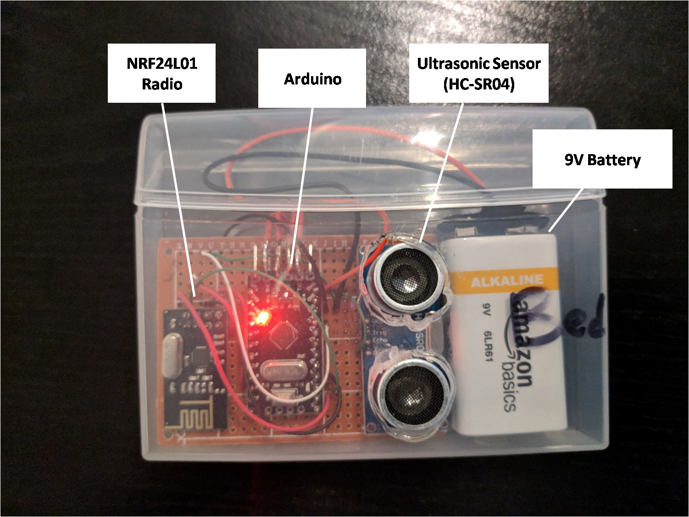
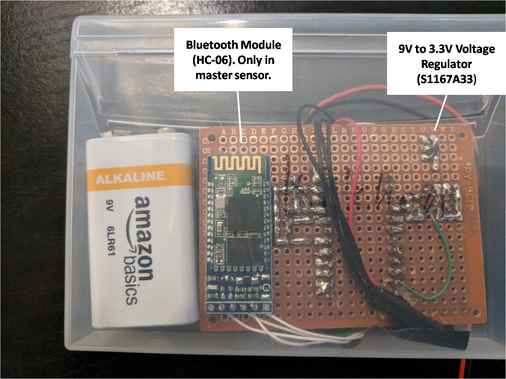
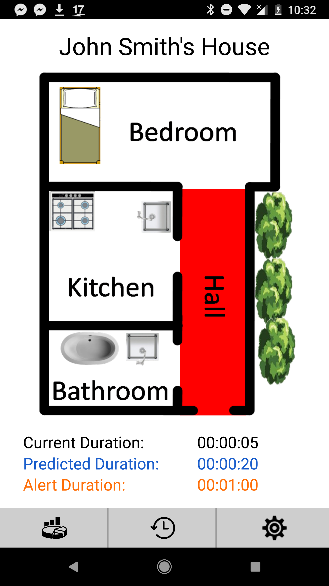
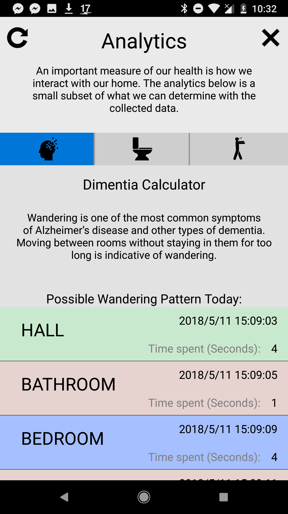
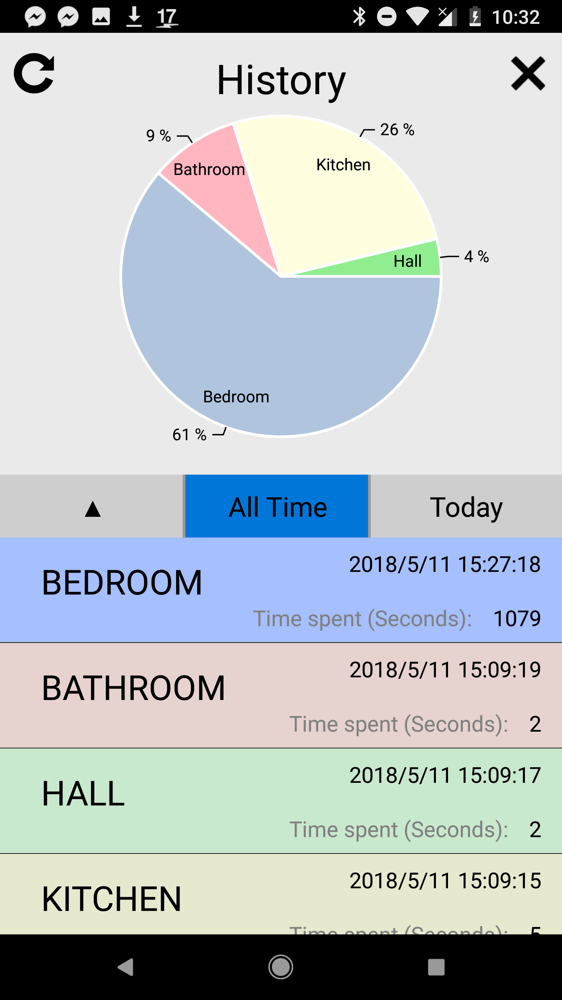
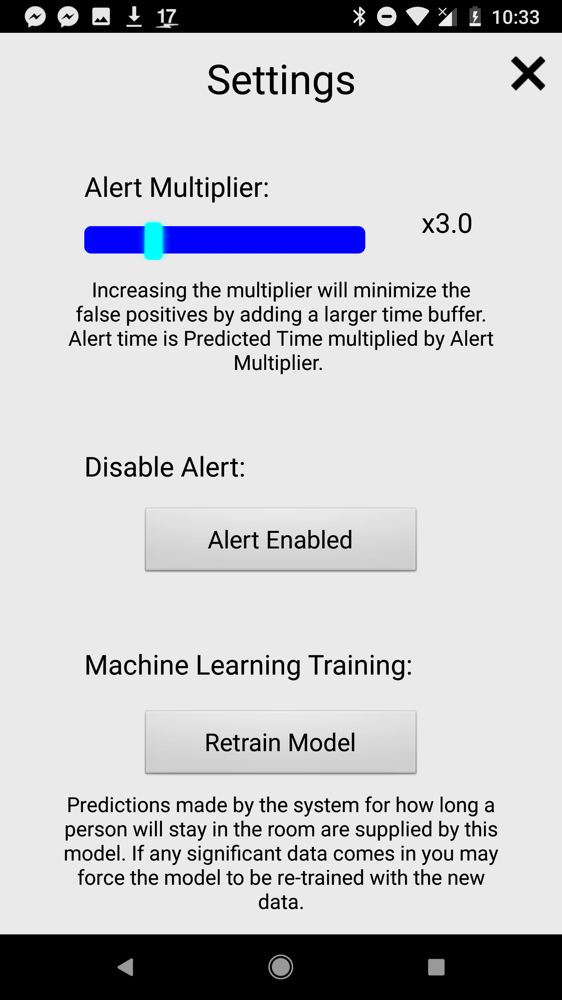
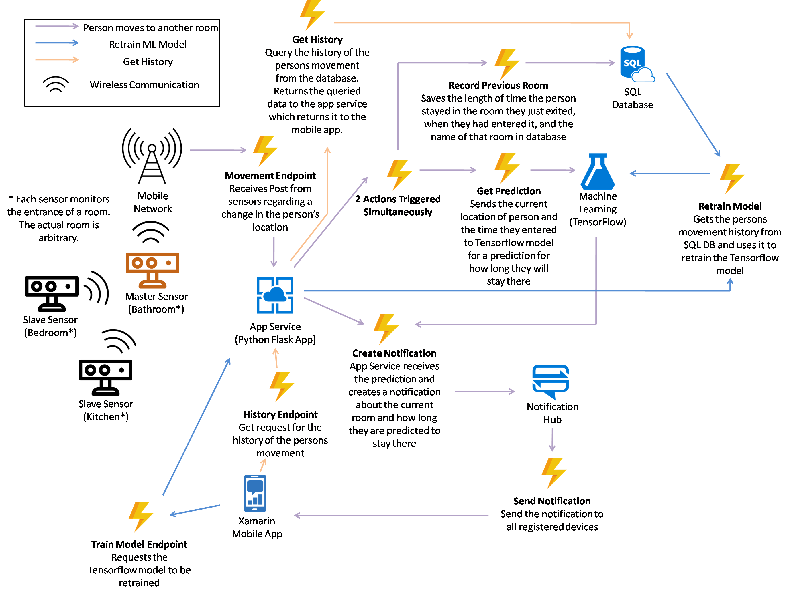
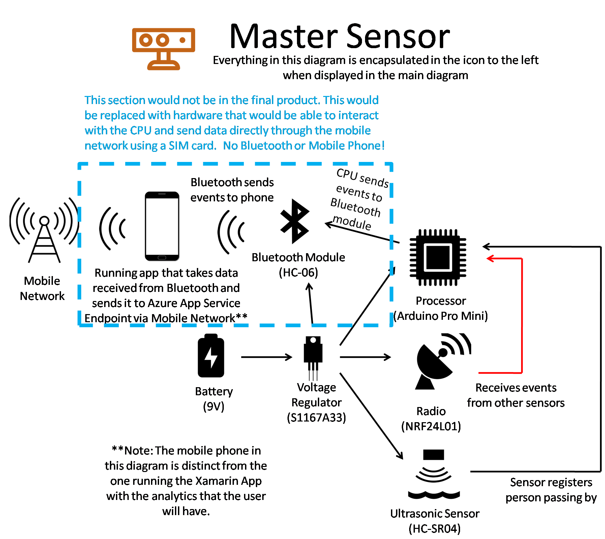
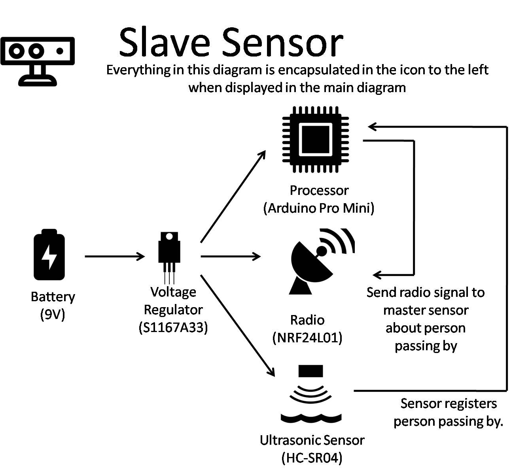
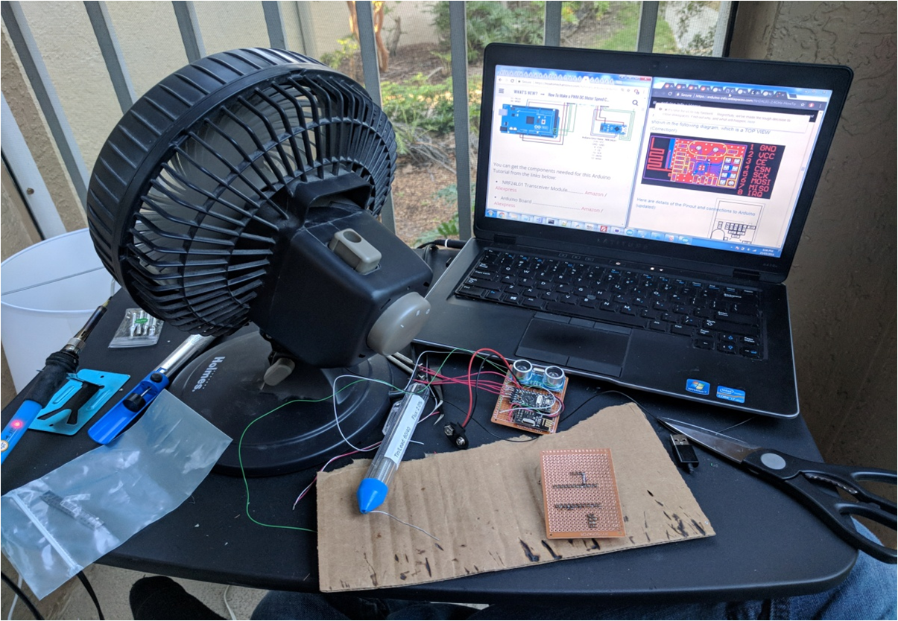

SEEME Project
The SeeMe project tracks elderly in their home to determine if there might be a problem.
- Hardware sensors located in each doorway determine where the person is located in the house
- Flask Python app running in Azure saves this sensor data to Azure DB Table
- Python app regulartly retrains Tensorflow model using the DB data which predicts the length of stay in the room
- Flask app sends notifictation to the Xamarin mobile app about location in the room, and the prediction
- If elderly person stays in a single room far beyond the prediction, Xamarin mobile app shows warning
A more descriptive explination can be found in the competition submission document here
Front of Sensor

Back of Sensor

Mobile App Home

Mobile App Analytics (Determines onset of Dementia, Insomnia, and other conditions)

Mobile App History

Mobile App Settings

Software Architecture

Master Sensor Architecture

Slave Sensor Architecture

The Lab (I was on an internship in Florida and had to get creative with little space and few tools)
